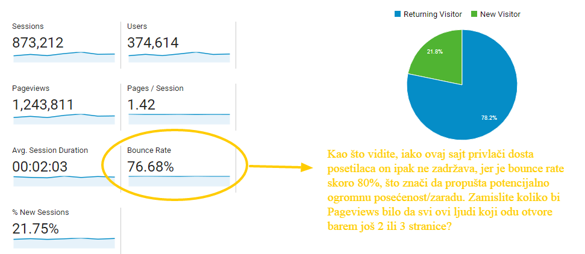
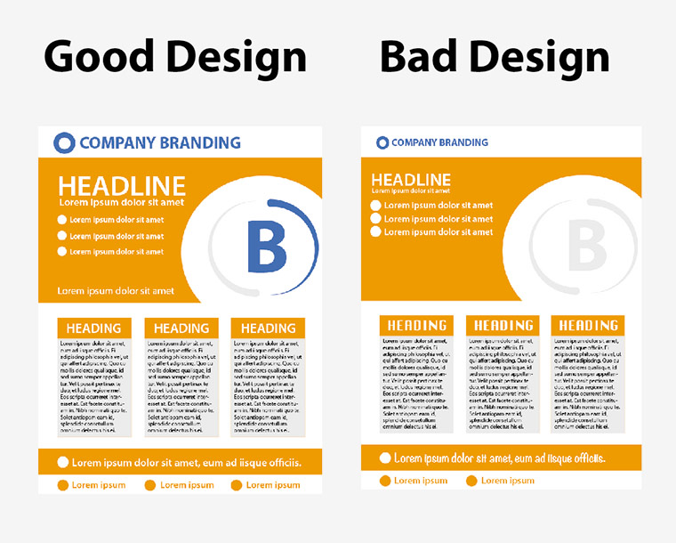
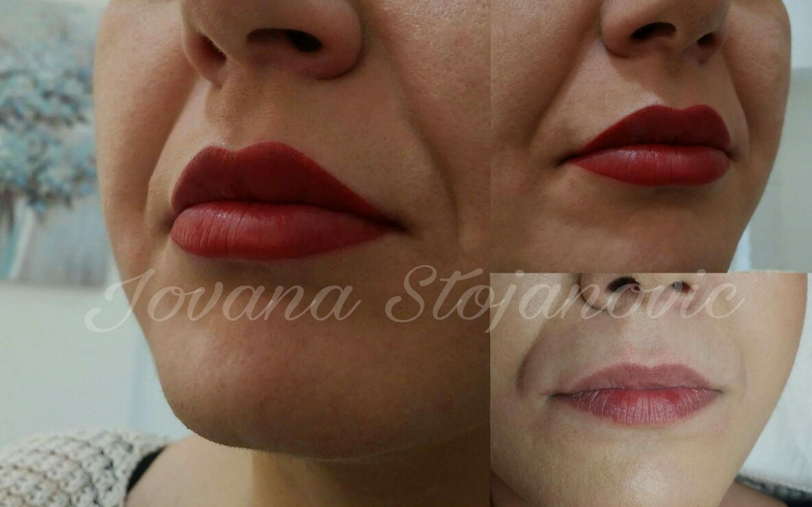

Bounce rate i sve o njemu
Šta je to Bounce Rate?
Google Analytics
Mnogi od vas ne znaju kada ustvari počinje da se meri posećenost sajta. Kada posetilac dođe na sajt, pogleda letimično naslovnu stranu i zatim ga napusti, vi zapravo nećete imati registrovanu posetu.
Tek kada otvori drugu stranicu kreće merenje vremena i zadržavanje na sajtu. Ukoliko posetilac ode sa te druge stranice, a da ne otvori treću, vama će se povećavati bounce rate to jest, Google vam govori da nešto nije u redu i da imate veliku odlaznost sa sajta.

Bounce rate možete proveriti u Google Analytics – ako je veći od 50%, to znači da imate veliku odlaznost sa prve stranice. Napomena: kad kažemo “prva stranica”, ne mislimo nužno na glavnu stranicu, već na prvu na koju je posetilac došao. Dakle, to može biti naslovna, zatim neka rubrika, ili “singl post page”, ako je došao direktno na tekst.
Bez obzira na koji način je posetilac došao na vaš sajt (direktno, pretraga, društvene mreže, referral…), ukoliko nije zadovoljan, on će ga u roku od nekoliko sekundi napustiti!
Glavni razlozi zašto posetioci (pre)brzo napuštaju sajt
Prvi je svakako presporo učitavanje sajta. Znate li koliko ima fantastičnih sajtova na vebu? Mali milion! Zašto bi onda neko čekao čitavu večnost da se vaš otvori? Na vašem računaru stranica se možda i brzo otvara, međutim, kod vas je ta stranica keširana, već ste je otvarali i brouzer vam isporučuje keširanu stranicu.
Tek brisanjem keša ili otvaranjem vašeg sajta na drugom računaru moguće je videti stvarnu brzinu učitavanja sajta. Naravno, ima i besplatnih alatki na internetu gde možete lako proveriti brzinu vašeg sajta jedna od njih je i Pingdom. Ukoliko vam je učitavanje sajta preko 3 sekunde zreli ste za SEO On-page optimizaciju vašeg sajta.
Gotovo u svakom tekstu na našem blogu pisali smo koliko je bitno da se stranica brzo otvara i kako to da postignete, tako da ako zaostajete koju sekundu, bacite se na proučavanje, ili nas kontaktirajte da vam pomognemo.
Odmah sledi muzika na sajtu, koja je odavno prevaziđena, ali neki i dalje ne odstupaju od toga. Stavite se u ulogu svog potencijalnog posetioca. Recimo da je rešio da iskoristi koji trenutak na poslu i pogleda aranžmane za letovanje. Tek što je otvorio sajt, zatekla ga je preglasna grčka muzika, jer vi, jelte, reklamirate putovanja i dobar provod. Cela kancelarija gleda u njega, a on nervozno klikće na “crveni iks”. I više nikad ne dolazi na vaš sajt!
Loš dizajn će odbiti čak i one koji se u isti ne razumeju. Danas se podrazumeva da dizajn bude kompaktan, pregledan, sa adekvatnim fontom i bojama, prilagođenim fotografijama. Obratite pažnju da li je sajt “natrpan”, ili je nekako “prazan”, da li tekst bode oči, kakva je pozadina… Ako ozbiljno shvatate ovaj posao, onda znate da je redizajn potreban s vremena na vreme, tako da ako vam je bounce rating visok, obavezno konsultujte veb dizajnera za savet treba li nešto menjati.

Pored lošeg dizajna tu je i nejasna navigacija. Ukratko, kad dođe na vaš sajt, posetilac treba da se oseća kao u svojoj kući: da zna gde se tačno nalazi i gde može naći ono što mu treba. Najjednostavniji način je da postavite navigacione elemente, takozvane breadcrumbs (ovo je takođe dobro za SEO).
Razloga zašto posetioci brzo napuštaju neki sajt ima sijaset, a mi ćemo još pomenuti funkcije koje ne rade (zar treba pojašnjavati koliko iritira kad kliknete na nešto s namerom i ne desi se ništa?) i nedovršene segmente. Ovo drugo se dešava kada se žuri sa lansiranjem sajta, pa se manje bitne stavke ostave po strani. Kada posetilac dođe na vaš sajt i klikne recimo na “drugi o nama”, a tamo nema ništa ili piše “stranica u pripremi”, to u najmanju ruku izgleda neprofesionalno. Ako nemate vremena da “popunite” sve rubrike, izostavite ih, pa ih dodajte kad obezbedite sadržaj za njih.
Šta, dakle, treba uraditi?
Sve! Šalimo se malo, no zaista, da bi vaš sajt bio prijatan posetiocu, zaista morate razmišljati o čitavom nizu segmenata koji utiču na korisničko iskustvo. Garantovano je nemoguće da vodite o svakom segmentu računa, ulažete u SEO, stvarate dobar sadržaj, u koraku ste sa trendovima i inovacijama, a bounce rate je previsok.
Ipak, postoje neke cake kako da koncipirate stranicu, tako da ona zadrži pažnju i navede na ostali sadržaj.
Recimo da imate salon koji se bavi trajnom šminkom, i naravno, istoimeni sajt. Zamislimo da je posetilac došao na tekst (u okviru bloga): “Trajna šminka očiju: Investicija koja će vam uštedeti jutarnje vreme”. Ok, zainteresovana dama je pročitala tekst, i šta onda? Potražiće cenu ukoliko je cenovnik na vidnom mestu, i to je to. Njena poseta je završena (pogotovo ako je cena previsoka, ili cenovnika nema uopšte) a vama raste bounce rate.
Međutim, zamislimo da u side baru (levi ili desni stubac na sajtu), u okviru i ispod teksta imamo sledeće stvari:
- “Pogledajte fotografije trajne šminke očiju, pre i nakon tretmana” (klik vodi na galeriju)
- Najčitanije na blogu (lista najčitanijih tekstova)
- Šta kažu naši klijenti (testimonijali, klik vodi na stavku u meniju “drugi o nama”)
- “Zato što znamo da nemaju vremena za šminkanje, svim porodiljama tokom maja dajemo 90% popusta na bilo koju uslugu trajne šminke!” (klik vodi na “promo akcije)
- “Trajna šminka usana: Od sada ćete koristiti samo labelo!” (tekst koji upućuje na ostale usluge koje salon nudi).
Uviđate li razliku, u prvom slučaju posetilac dolazi na sajt po informaciju i tu se poseta završava, a u drugom kao da se našao u prodavnici dečijih igračaka, prosto ne zna gde će pre da pogleda pa samim tim bounce rate opada!

Poenta je, da kad dođe na bilo koju stranicu vašeg sajta posetilac treba da se oseti udobno, da dobije ono po šta je došao, a i da ostane duže nego što je planirao.
Google analytics code
Zvučaće apsurdno ali i sam google analytics code ukoliko se nalazi u head tagu, dosta usporava učitavanje sajta. Guglova instrukcija je bila da se stari "code" za GA stavlja baš u head tag. Posle mnogobrojnih žalbi da "code" usporava učitavanje sajta, gugle je rešio taj problem sa asinhronom java skriptom koja sad može da bude bilo gde na stranici ali se preporučuje odmah posle otvorenog "body" taga i poboljšava značajno bounce rate.
Vi ćete samo umesto "UA-XXXXXXXX-X" staviti vaš tracking code iz vaše gugle analitike.
Inače sve java scripte prave isti problem ako su u head tagu tako da i njih zamenite sa "async" i smestite u "futer". Naravno ako neka mora da bude u head tagu nije problem. Na taj način ćete značajno ubrzati otvaranje sajta.
<script type="text/javascript">
var _gaq = _gaq || [];
_gaq.push([‘_setAccount’, ‘UA-XXXXXXXX-X’]);
_gaq.push([‘_trackPageview’]);
setTimeout(‘pageTracker._trackEvent(‘NoBounce’, ‘NoBounce’, ‘Over 10 seconds’)’,10000);
(function() {
var ga = document.createElement(‘script’); ga.type = ‘text/javascript’; ga.async = true;
ga.src = (‘https:’ == document.location.protocol ? ‘https://ssl’ : ‘http://www’) + ‘.google-analytics.com/ga.js’;
var s = document.getElementsByTagName(‘script’)[0]; s.parentNode.insertBefore(ga, s);
})();
</script>
Ovo su samo neke smernice kako možete koncipirati stranice vašeg sajta. Nemojte da vas obeshrabri ako smatrate da je vaš sajt suviše ozbiljan ili statičan za korekcije ovog tipa, garantujemo da se apsolutno svaki sajt može struktuirati tako da nagna posetioce da se zadrže na njemu.
Ukoliko vam je ovaj tekst bio koristan, sigurno će biti i vašim prijateljima pa vas molimo da ga podelite na vašoj društvenoj mreži. Hvala!

SEO smernice za 2019 godinu
Pročitajte na šta treba da obratite pažnju u 2019 godini....
Detaljnije...

Linkbuilding Tutorijal za 2019
Zašto su backlinkovi i dalje najvažniji za optimizaciju sajta...
Detaljnije...

Kad dolaze SEO rezultati?
Kada SEO počinje da generiše veću prodaju, kad dolazi rangiranje...
Detaljnije...